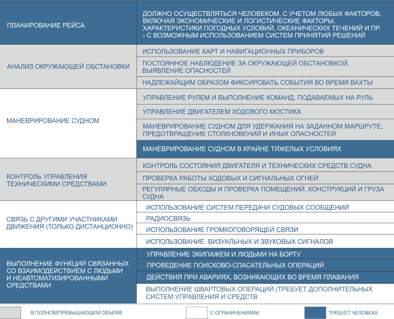

Технологии
- Функциональный подход
- Системная архитектура
- Автономная навигационная система
- Оптическая система анализа ситуационной обстановки
- Система координированного управления движением
- Расширение систем управления техническими средствами
- Пульт дистанционного управления
- Аппаратное обеспечение а-Нав
- Передача данных и кибербезопасность
- Мостиковый планшет
- Караванное управление
- Нормативное регулирование
Функциональный подход
Стратегическая цель нашего проекта – обеспечить широкое, массовое применение морских автономных судов (МАНС) потребителями.
Препятствием для этого сегодня служит отсутствие внятного подхода к тому, как должны функционировать МАНС среди традиционных, на чем должна основываться логика принятия решений их системами управления – страх, что автономные суда будут неконтролируемым и непредсказуемым новым фактором в исторически сложившейся и понятной всем практике судоходства. Это же является причиной и нерешенных вопросов нормативного регулирования, без которых невозможно регулярное применение новых технологий в морском транспорте.
Принцип полной функциональной эквивалентности является решением этой проблемы. Он подразумевает точное исполнение в автономном режиме тех функций, которые сейчас предписано исполнять экипажу на борту действующим регулированием.
Полная функциональная эквивалентность служит общим знаменателем для автономных и традиционных судов. С одной стороны, она гарантирует, что при взаимодействии с другими участниками судоходства МАНС будут руководствоваться и выполнять всем известные и обязательные функции – т.е. делает работу МАНС предсказуемой и понятной для всех. С другой стороны, она позволяет использовать новые технологии в рамках существующих международных конвенций, не требуя их немедленного изменения, а подстраиваясь под них на уровне национального регулирования.
Для реализации этого принципа в ходе проекта были выделены ключевые функции, предусмотренными СОЛАС-74, Кодексом ПДНВ и МППСС-72, а также другими документами. В отношении каждой из них были оцененывозможность, ограничения и целесообразность автоматическогои дистанционного управления.
При этом, мы не ставим задачу получить сегодня безэкипажное судно – т.е. судно, где вообще нет места для человека на борту. Аналогично проекту MUNIN, мы исходим из того, что для различных задач в тех или иных условиях должны использоваться наиболее адекватные способы управления: например, полностью автоматический в открытом море, дистанционный в нештатных ситуациях, человеком на борту – в экстремально сложных или аварийных ситуациях.
В отношении каждой из автоматизируемых функций действует простое правило: они должны выполняться в не меньшем объеме, чем выполняются сейчас экипажем на борту.